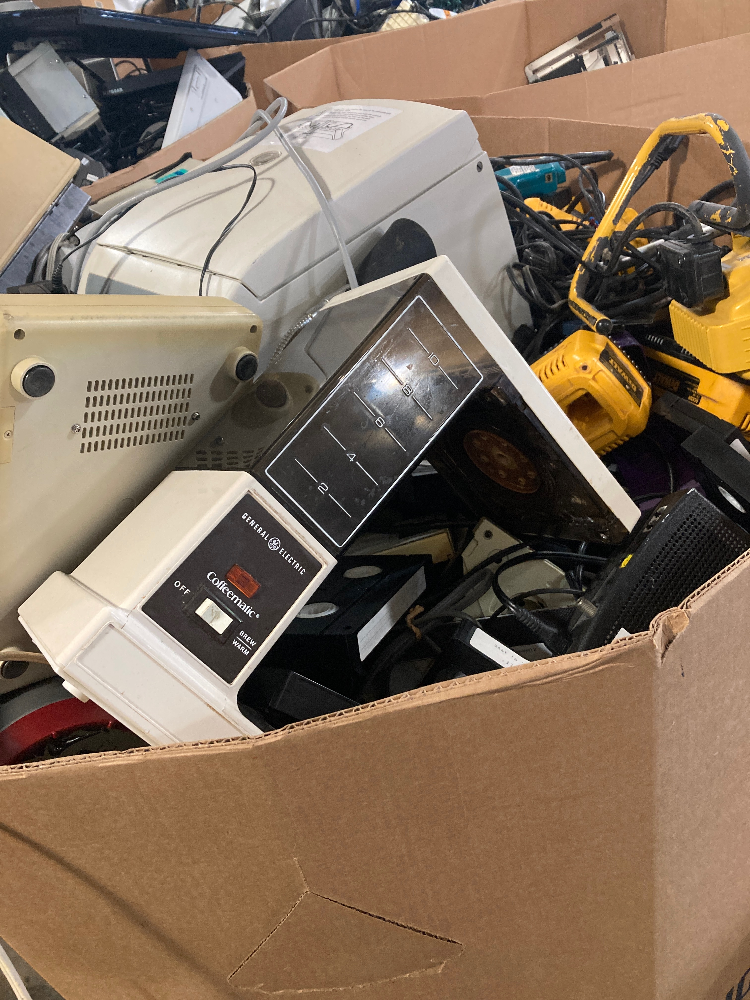

PERCOLATING HUMAN COMPUTER INTERACTION
Percolating HCI is an ongoing project featuring a coffee gadget
interfaced with DDR2 unbuffered DIMMS. The project focuses on a
custom built personal computer (PC) named Coffeematic PC. This PC, which is
self-destructive by design but finds harmony in trials, examines digital flows from perspectives of
percolation and design. The following is a catalog of how Coffeematic PC works, how it extends headroom
within operating environments, and how it is
percolating processes beyond its configuration. I am not the first to synthesize a coffee maker
and personal computer.
There have been 5 users including myself who have made it. But, Coffeematic PC
is different, and it could not exist without the unsung, innovative nature of its predecessors.

Profound and poetically articulated. Elegant and assertive. Highly scaleable with dynamic acceleration.
No. These do not describe Coffeematic PC or its peers (one of those phrases describes a bottle of wine.)
Custom computer modification has a not-so-long history.
The machines discussed in this article span from 2002 to 2024 and custom PC modification can be traced to
1995 when early computer games were released. Saavy experimenters upgraded
clunky PCs with increased airflow, graphics and sound cards, and by 2002 they were using Dremels, custom circuits, and cart wheels
(can you do one?) to pimp their rigs. Saavy hobbi-artists do the same today. The impulse
to create absurd computers has not changed that much over time. This is a group of curious risk-takers seeking
innovation and a little attention, not too different from a child who sticks a fork into an electrical outlet.
The desire to innovate has not changed, but tech and culture has. Only a very
odd person would say they "Pimped their rig" in 2024.

This is how Coffeematic PC works. The computer is fully functional. The coffee maker is too, it percolates Java like a regular coffee maker. Very hot Java. Computers usually use fans or liquid cooling systems to reduce heat. Coffeematic PC uses the hot Java it brews to heat? cool? caffeinate? the computer. A pump takes the hot, caffenated slurry (~90C/194F) and circulates it thru two radiators sitting on top of Coffeematic PC's crown -> down to a central processing unit (CPU) tucked within an ASUS M2NPV-VM motherboard snugly strapped to Coffeematic PC's athletic back. Java continues through an artery returning to Coffeematic PC's reproduced caraffe. The process repeats until Java is integrated with end-user or the machine is powered off.

↑ Coffeematic PC has a dedicated pump to aggressively dispense Java for user.
CPU's are meant to be cool and Java hot. Despite circulating hot Java, Coffeematic PC does not crash. To understand more, I wrote command line code to gather data on Coffeematic PC every 5 seconds, and monitored Coffeematic PC for 75 minutes while I did stuff on my lean mean percolating machine... wait... The graph below shows the results. The machine is just barely non-destructive. Coffeematic PC's CPU, body, and circulatory system eventually find equalibrium. A warm 33C/91F - amazingly close to the temperature of the slurry that flows through you and me.

An important part of this project is the lineage of coffee maker computers.
Before discussing that,
this is how how Coffeematic PC was made.
The build is a mix of discarded electronics and newly purchased
hardware, pumps, and radiators. The motherboard, CPU, RAM, and graphics card are from the early 2000's and were
sourced from a recycling center. This is a parts list for Coffeematic PC.
- GE Coffeematic Coffee Maker 10 Cup
- ASUS M2NPV-VM AM2 Motherboard
- AMD Athlon II X4 640 3 GHz Quad-Core OEM/Tray Processor
- Hynix 1GB 2Rx8 PC2-5300U-555-12 PC2-DDR2 RAM
- Acer SA100 240 GB 2.5" Solid State Drive
- HIS H467QR1GH Radeon HD 4670 1 GB Video Card
- Antec Earthwatts Green 430 W 80+ Bronze Certified ATX Power Supply
- Linux Mint Operating System
- CPU Water Cooling Block for Intel
- Water Cooling Computer Radiator
- 12V Mini Food Grade Self Priming Diaphragm Fresh Water Transfer Pump
- Waterproof Toggle Switch 12V
- Brass Hose Barb 3/8" to 3/16"
- Brass Hose Barb, 5/16" to 3/16"
- 90 Degree Elbow Hose Barb 3/16"
- 90 Degree Elbow Hose Barb 3/8" 10mm
- 90 Degree Elbow Hose Barb 5/16" 8mm
- Food Grade Silicon Tubing 3/16" ID x 5/16" OD
- Food Grade Vinyl Tubing 5/16" ID - 7/16" OD
I spent about a month designing and building Coffeematic PC with the help from my beautiful fiance.
I'm not the first person to synthesize a coffee maker and a computer.
But, I think I am the first to use hot Java as a cooling method. The graph below shows the lineage of
coffee maker computers. There are a total of 5. In 2002 Nick Pelas built the first ever coffee maker computer named The Caffeine Machine.
Then, the builds went cold for 15 years until 2018, when a company named Zotac made a coffee maker computer
to feature in a trade show. One year after in 2019, a man whose username is Logarythm made the Mr. Coffee PC. This is perhaps
my favorite coffee maker PC build. Logarythm has built several incredible PCs and he has a sleeper type of identity.
5 years later, after COVID-19, NerdForge, a youtube channel specializing on fun builds, built a "PC that
makes coffee". During this time I was making Coffeematic PC. I was only aware of 2002's Caffeine Machine when making
Coffeematic PC. The discovery of the other build has exposed an interesting lineage of PC builds. Curiously spanned 22 years
apart with a 15 year gap in the midde.

- 2002 - The Caffeine Machine - Nick Pelis
- 2018 - Zotac's Mek1 Nespresso
- 2019 - Mr. Coffee PC - Logarythym
- 2024 - I Built a PC that Makes Coffee - Nerdforge's Martina and Hansi
- 2024 - Coffeematic PC - Doug MacDowell